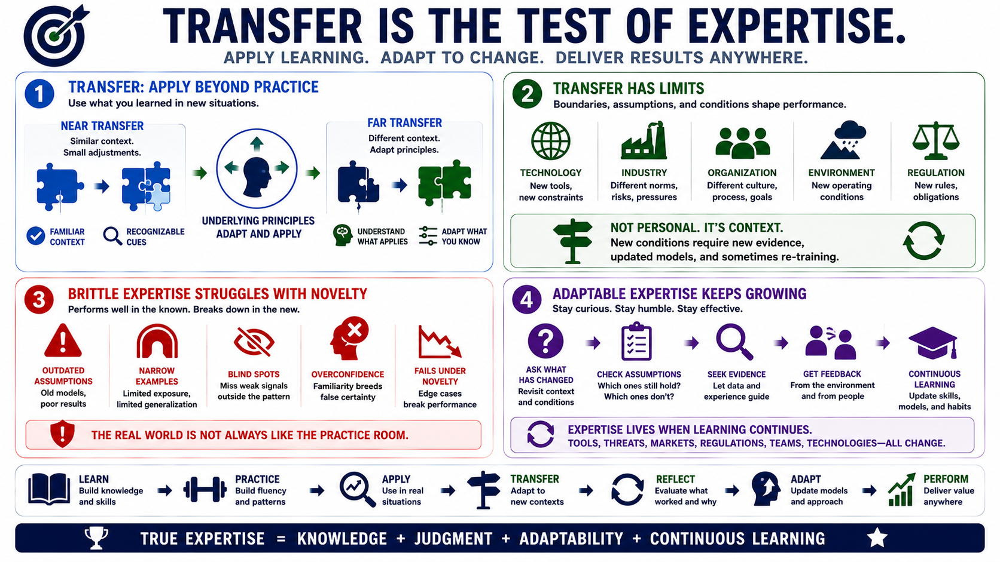

Transfer, Adaptability, and Limits of Expertise
Connecting to LMS... Progress: in progress

Narration
Transfer is the ability to apply learning beyond the original practice context. Near transfer happens when the new situation closely resembles what the person has already practiced. Far transfer requires adapting principles to a meaningfully different situation. Expertise often transfers well when the underlying structure is similar, the cues are recognizable, and the expert understands which parts of the old model still apply.
Expertise does not transfer perfectly everywhere. Domain boundaries matter. A strong performer in one technology, industry, organization, or operating environment may struggle when assumptions change. This is not a personal failure. It is a reminder that expert judgment depends on the conditions that shaped it. When those conditions change, the expert needs fresh evidence, updated models, and sometimes deliberate re-training.
Brittle expertise performs well under familiar conditions but struggles when novelty appears. It may depend on outdated assumptions, narrow examples, or a lack of exposure to edge cases. Expert blind spots can also emerge because deeply skilled people may forget what beginners do not know, overlook weak signals outside their usual pattern, or become overconfident when a situation feels familiar.
Adaptable expertise requires humility and updating. Strong experts ask what has changed, which assumptions may no longer hold, and what evidence would change their mind. They seek feedback from the environment and from other people. Continuous learning keeps expertise alive because real domains do not stand still. Tools, threats, markets, regulations, teams, and technologies all change the conditions under which judgment must operate.